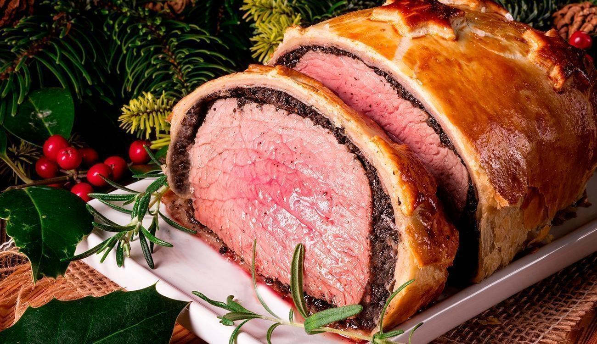

Receita
Bife Wellington

Ingredientes (6 porções):
- 1 peça cilíndrica de filé mignon (800 g)
- 600 g de cogumelos (não dá pra fazer com champignon)
- 1 folha de massa folhada crua
- 2 gemas de ovo
- sal a gosto
- 400 g de presunto de parma fatiado
- 2 colheres de mostarda dijon
- 1/2 xícara de azeite
- 4 dentes de alho
- pimenta-do-reino a gosto
Modo de preparo:
- Tempere a peça de carne com alho, pimenta-do-reino e sal.
- Em uma frigideira grande, bem quente, sele a peça com o azeite.
- Pincele com mostarda Dijon e reserve.
- Triture os cogumelos e refogue em uma panela em fogo médio até secarem.
- Não precisa adicionar nada, só os cogumelos triturado (eles soltam muita água).
- Mexa bem.
- Em um filme plástico grande, posicione as fatias de presunto parma uniformemente e cubra com uma camada do creme de cogumelos refogados.
- Posicione a peça de carne e enrole bem apertado.
- Coloque no freezer por 10 minutos ou na geladeira por 30 minutos.
- Abra a massa folhada sobre um filme plástico, retire cuidadosamente o filme plástico da peça de carne enrolada com o presunto parma e cogumelos e enrole na massa.
- Aperte bem.
- Deixe no freezer por 5 minutos ou na geladeira por 15 minutos.
- Remova o filme plástico e apare as arestas, deixando a massa ficar lisa e uniforme na peça.
- Pincele com as gemas e enfeite com as costas de uma faca.
- Leve ao forno pré aquecido a 220º C por 35 minutos.
- Após retirar do forno, deixe repousar por 10 minutos antes de abrir.